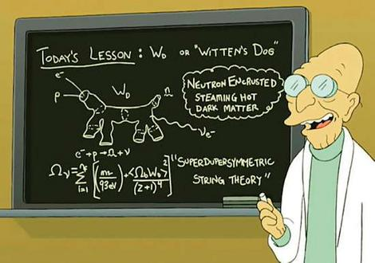
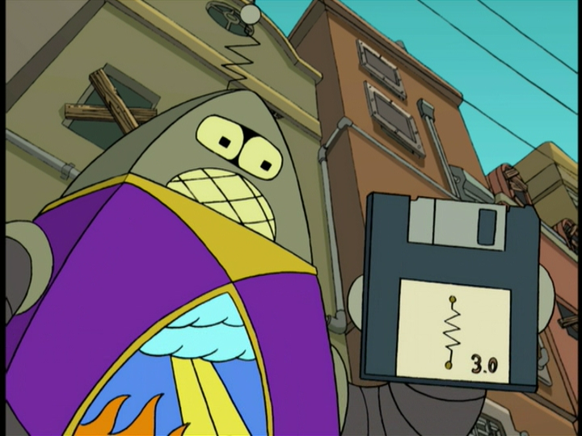

Serverside Webscripting [JLW280]
00.intro
It looks like you are viewing these slides on GitHub. Please clone the source repository in order to get the included PHP examples to work.
Slidedeck?!
Wait? What? This is it?!
- Yes, it's called a slide deck.
- Built with HTML/CSS/JS
- Powered by (a customized) Reveal.js
- Main navigation: left/right
- Sub-slides: up/down (try it now!)
- Touch Device users: Swiping supported!
Lost?
- Compass (Bottom-Right)
- Slide Number (Bottom-Right)
- Progress Bar (Bottom)
- Slide Overview (space)
- Back to index link (Top-Left)
Code Examples
- This slidedeck is filled with interactive examples
-
Syntax Highlighted + Editable
- Thanks to Highlight.js
-
Numeric values can be adjusted with the ↑ & ↓ keys
- Thanks to (a customized) Incrementable
- Give it a try!
body {
font-size: 1em;
padding: 20px;
color: lime;
}Code Examples: CSS
- Some CSS Snippets are linked to elements ...
color: red; - ... or to the current slide
font-size: 100%;- Thanks to (a customized) CSS Snippets
- And oh, CSS Snippets don't need vendor prefixes
box-shadow: 0px 0px 10px #888;- Thanks to PrefixFree
Code Examples: JS
- JavaScript blocks can even be run!
- Use “Run” button, or hit CTRL+ENTER
// A comment
alert('OK GO!');- Note
- JavaScript will be taught in the course “Clientside Webscripting”
- If present, most JavaScript examples will use
console.log()— Firebug (or the like) required!
Code Examples: HTML
- HTML blocks can be rendered into an overlay
- Use “Show in overlay” button, or hit CTRL+ENTER
- Click the dark overlay background to close it
<h2>This is how you mark up an unordered list</h2>
<ul>
<li>Coffee</li>
<li>Tea</li>
<li>Milk</li>
</ul>Code Examples: HTML & PHP
-
HTML & PHP examples can be linked to a working example.
- The example can be rendered into the overlay
- The example can be linked into a new window/tab
- Use “Show in script overlay” button, or hit CTRL+ENTER
- Click the dark overlay background to close it
<?php
echo 'Hello world! The time is now ' . date('Y-m-d H:i:s', time());
?>
Printing?
-
Don't
- These are interactive slides
- They will be updated regularly
- You can't copy paste from paper
- If you really want: you can
- Only supported in Firefox and IE though
Webscripting 2

Back on track ...
Webscripting 2
- Webscripting 2 = main course (OPO)
-
Contains only 1 sub-course
- OLA Serverside/Advanced Webscripting [JLW280]
Instructors
-
Bram(us) Van Damme
bramus.vandamme@kahosl.be -
Davy De Winne
davy.dewinne@kahosl.be -
Kevin Picalausa
kevin.picalausa@kahosl.be
Timing
- One semester = 13 weeks
-
Two main parts
- Week 1-7 = PHP
- Week 8-12 = Information Architecture
- Note: Week 13 = polyweek
Serverside Webscripting

To the flying machine!
Prerequisites (1)
-
HTML5 & CSS (OPO Webtechnieken)
- HTML5
- Correct use of elements
- Proper syntax / validation
- CSS
- Text styling & Backgrounds
- Box Model
- Positioning with float/absolute/relative/fixed
- “New” CSS3 features
- Firebug (video)
- HTML5
Prerequisites (2)
-
Programming (OPO Programmeren 1)
- Iterations (
for,foreach) & Selections (if-else,switch) - Arrays
- Functions
- Classes, Constructors & Objects
- Iterations (
Prerequisites (3)
-
Databases (OPO Gegevensbanken)
- Structured Query Language
- Basic CRUD Actions (
INSERT,SELECT,UPDATE,DELETE) - Subqueries & Joins (left, right, inner)
- Calculations (numbers, dates, etc.)
- Optimization (
EXPLAIN ...)
- Basic CRUD Actions (
- Basic Administration
- Import & Export of an
.sqldump - User Management
- Import & Export of an
- Structured Query Language
Prerequisites (3)
-
Webscripting 1
- Serverside Webscripting
- PHP Syntax
- Client-Server
- Forms
- Data Persistency
- Classes
- Templates philosophy
- Databases basics
- Clientside Webscripting
- JavaScript Syntax
- DOM & Events
- jQuery Basics
- Ajax
- Serverside Webscripting
Course Subjects
-
PHP
- PHP Libraries (Composer)
- Silex Basics
- Silex Providers
- Silex Services
-
Information Architecture
- User Stories & Page Tables
- Wireframing
- Responsive
-
Misc
- Git
- URL Design
- Web Process
- Deployment
Technology
-
Technology
- Scripting Language: PHP 5.4
- Databaseserver: MySQL and SQLite3
- Webserver: Apache or PHP 5.4's built-in server
-
Wampserver (Win) or MAMP (Pro) (OS X) recommended
- Follow these instructions to configure your install
- Be sure to add the PHP binary to your system's
PATH- Windows: Add
C:\wamp\bin\php\version\toPATHvia Computer Settings - OS X: Paste this on the Terminal:
echo 'export PATH=/Applications/MAMP/bin/php/phpversion/bin/:$PATH' >> ~/.bash_profile
- Windows: Add
Development
-
A PHP specific IDE
- Netbeans
- Aptana Studio
- PHPStorm
- Zend Studio
-
Your favorite text editor with these features (why?)
- Syntax Highlighting
- Autocompletion
- PHPDoc Integration
- On-the-fly syntax check
Course Materials, Assignments & Announcements
-
Everything distributed via Toledo
- Check it regularly!
-
Course Materials
- Available on GitHub
- Feel free to fork and commit improvements/additions
-
Assignments
- Several tasks grouped into one big assignment
- To be completed by the end of the week (Sunday, 8PM)
Cloning the Course Materials
-
Download and install Git
- Choose “Run Git from the Windows Command Prompt” during install
-
Clone the repository
cd c:\wamp\www git clone https://github.com/bramus/ws2-sws-course-materials.git- Visit your copy at http://localhost/ws2-sws-course-materials
-
Update the repository regularly to get the latest version
cd c:\wamp\www\ws2-sws-course-materials git reset --hard git pull
Evaluation
-
Permanent (60%)
- 60%: Progress, Accuracy, Attitude, Programming Style, ...
-
Project (40%)
- Launched after the Eastern Holidays
When stuck ...
Help yourself ...
-
Breathe in, breathe out, and THINK!
-
Error visible? Read it!
- PHP will tell you what went wrong in which file and on what line
-
Correct URL? Correct variable? Does the variable contain anything?
- Debugsession
- use
dump();
- TIP: Rubber Duck Debugging
-
Error visible? Read it!
-
Use the built-in help
- Syntax Highlighting
- Function autocompletion
- Function documentation (PHPDoc)
... or get helped
-
Keep the 10 minute thinking rule in mind!
You may only interrupt another co-worker to ask a question if you have sat on your own for ten minutes and tried to figure out the solution yourself. When asked, you must be able to demonstrate that you’ve made some effort.
- Check the slides and code examples
- Check http://php.net/nameofthefunction
- Check Google (#lmgtfy)
- Check ICT-Blue (Forum/Wiki)
-
Ask a colleague or post a question on ICT-Blue
- Mail a link to the topic on ICT-Blue to your instructor
Domestic Conventions

Domestic Conventions
(Huishoudelijk Reglement)
- Do apply
- Can be found on Toledo
- Rules/Conventions about
- Plagiarism
- Deadlines and Uploads
- Absences
- Code Style and Code Layout